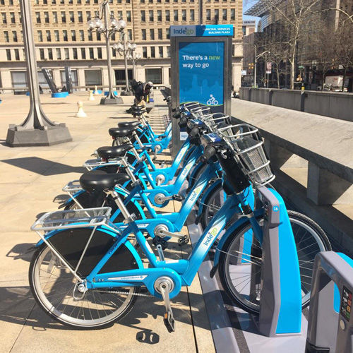

Hour by Hour Use of the Indego Bike Share in Philadelphia, July-September 2016
This map enables the user to visualize the use of the Indego Bike Share by station over the course of a 3 month period, grouped by every hour of the day. These data points include all rides from a hour block (3pm - 4pm, for example) throughout all 3 months.

Total Trip Activity in Hour from July to September